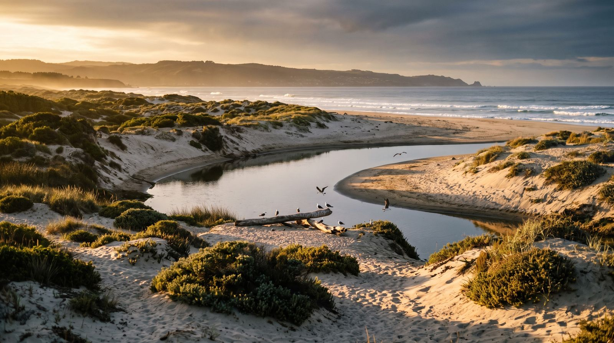
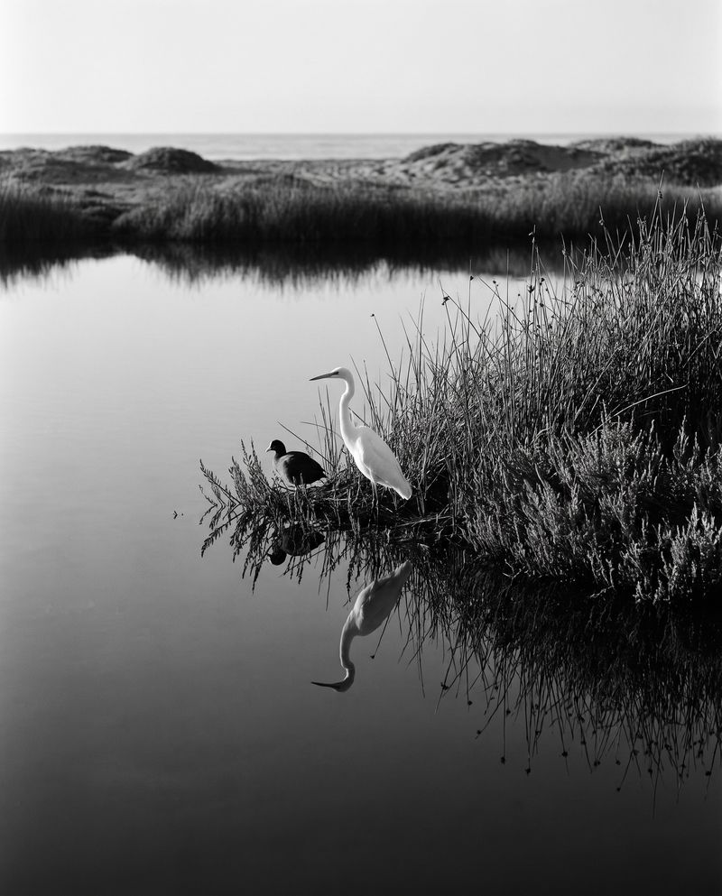
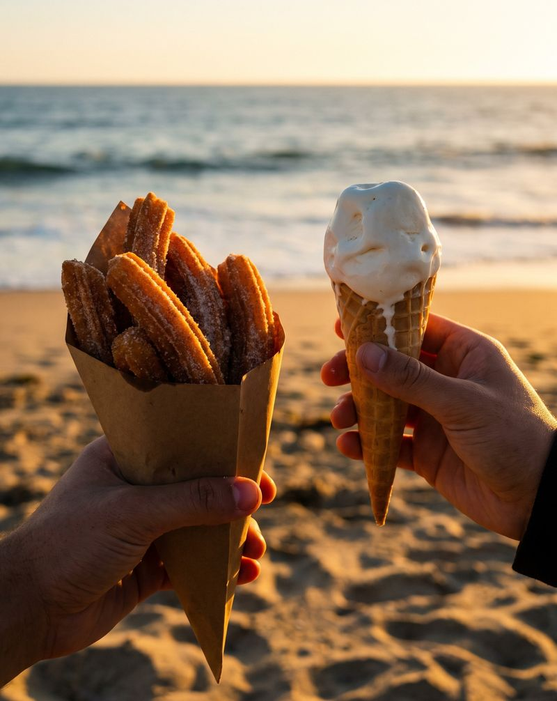
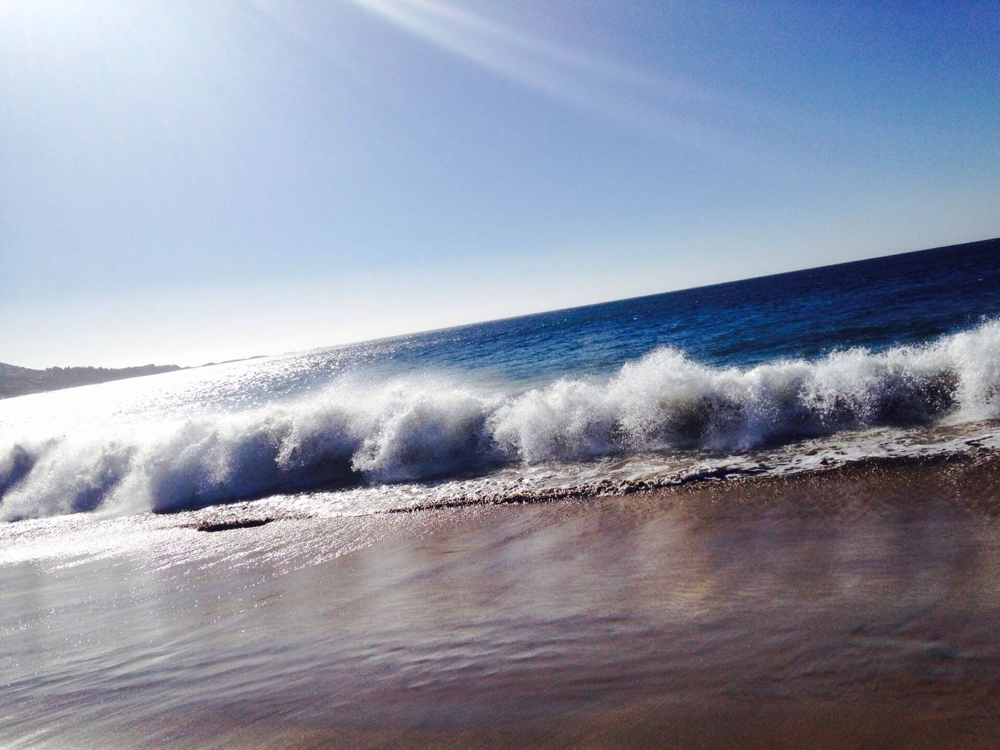
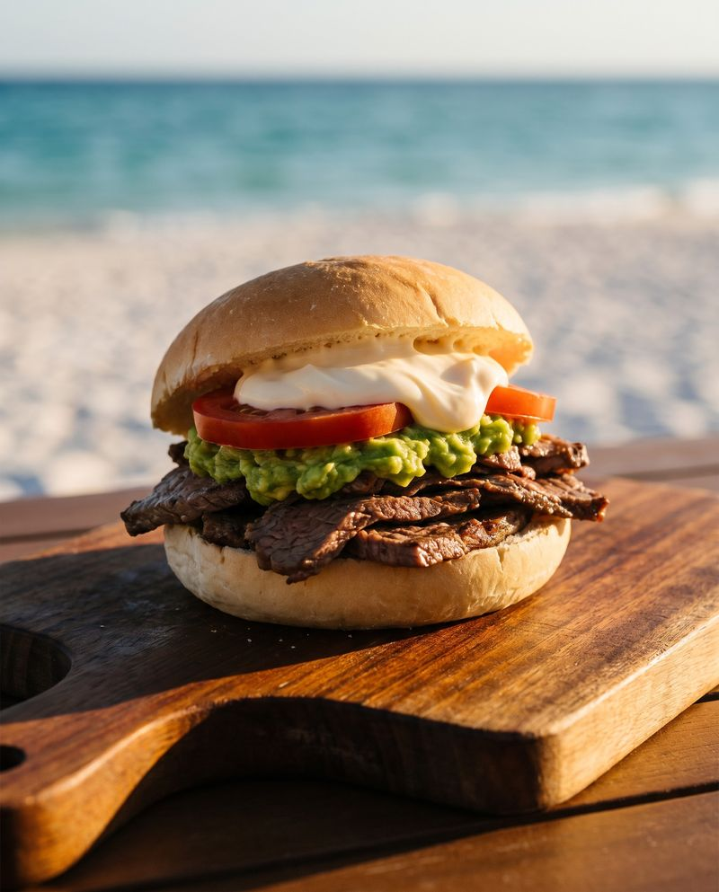
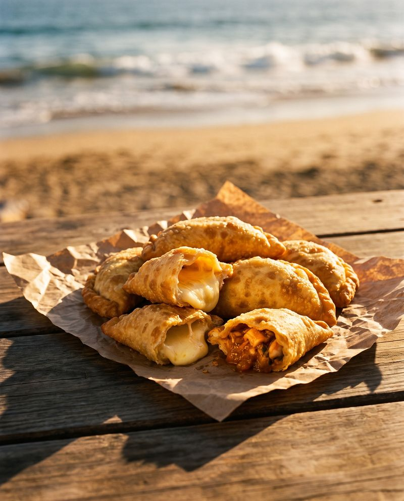

Playa Las Salinas de Pullally, Papudo
Entre dunas,
río y mar
Churrascos, empanadas, churros y helados hechos al momento, a pasos del santuario de la naturaleza. Ven con tu familia o trae a todo tu grupo.
Nuestras raíces
Un lugar para comer rico, sacarse la arena de los pies y quedarse un rato más mirando el mar.
Roots Salinas nace del cariño por este rincón de la costa y por la buena mesa. Somos el punto de encuentro para familias, amigos y la comunidad, justo donde el río se encuentra con el mar.
- Hecho al momentoChurrascos, empanadas y churros recién preparados.
- Ambiente familiarTranquilo para niños, abuelos y amigos.
- Con la comunidadAtención especial para clubes, juntas de vecinos y colegios.


Al lado de un santuario de la naturaleza
Estamos junto al Santuario de la Naturaleza Humedal Salinas de Pullally y Dunas de Longotoma, donde los ríos Petorca y La Ligua llegan al mar. Ven por el sabor y quédate por el paisaje.
- 677 ha
- de humedal y dunas protegidas
- 2 ríos
- Petorca y La Ligua se juntan con el mar
- 2 horas
- aprox. desde Santiago por la Ruta 5 Norte

Cuidemos el santuario
Camina por los senderos y no entres con vehículos a las dunas. Observa las aves de lejos, sobre todo en época de nidos. Y llévate tu basura: si no hay basurero cerca, la recibimos nosotros.
Nuestra carta
El sabor que te atrapa
Todo se prepara al momento. Pregunta en el local qué hay disponible hoy.


Packs para grupos
¿Organizas el paseo de curso, la salida del club de adulto mayor, el centro de madres o el tercer tiempo del equipo? Elige un pack, cuéntanos cuántos vienen y te mandamos una propuesta.
Todos los packs se ajustan a tu presupuesto y a necesidades especiales, como opciones vegetarianas o sin gluten.
Cotiza tu visita
Completa los datos y se abre un mensaje listo para enviarnos. Te respondemos con disponibilidad y una propuesta para tu grupo.
- Completa el formulario.
- Envía el mensaje que se abre.
- Te respondemos con la propuesta.
Cómo llegar
- Desde SantiagoRuta 5 Norte hacia Papudo, unos 140 km (cerca de 2 horas).
- Desde PapudoSigue al norte por la costa hasta Pullally. Busca la desembocadura del río y las dunas: ahí estamos.
- En bus de grupoAvísanos al cotizar y te indicamos dónde estacionar y bajar.
Horarios
Preguntas frecuentes
Síguenos en Instagram
Promos del día, novedades de la carta y los atardeceres de Las Salinas.
@roots.salinas